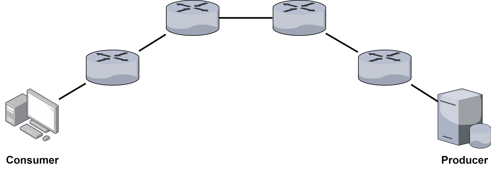
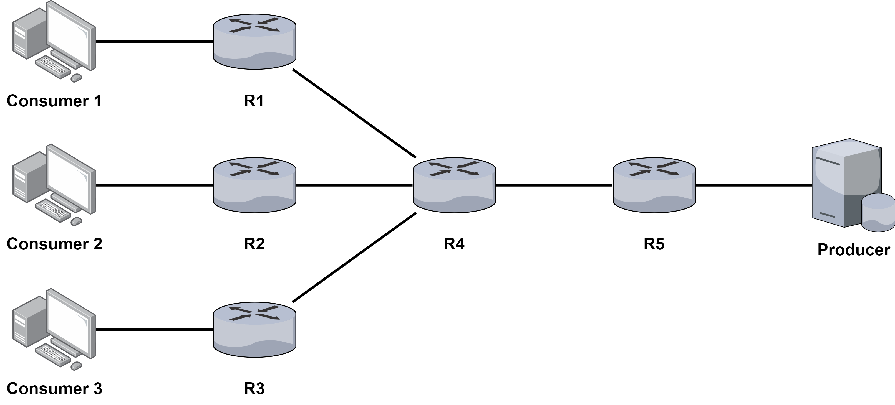
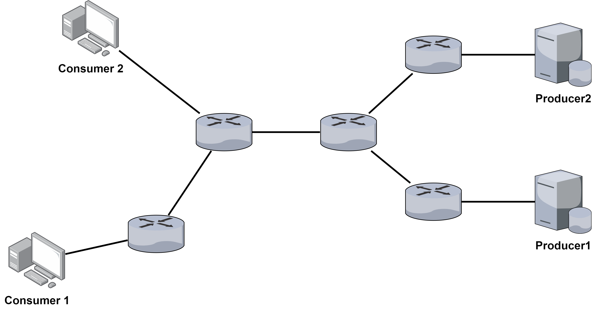
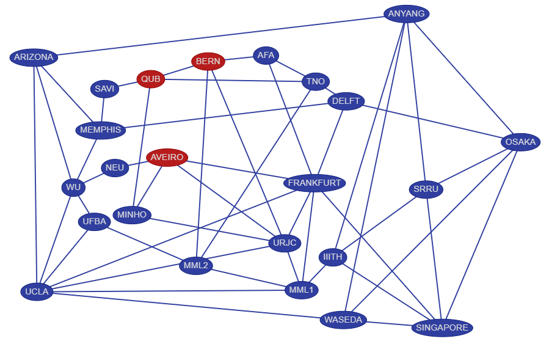

模擬方法與參數
說明
ndnSIM 以 scenario 設定不同模擬情境，撰寫 scenario 程式碼的基本方法請見官方文件，此處著重介紹如何使用《結合內容評分與共享機制的命名資料網路快取策略》的原始碼進行模擬，以及模擬時常用的設定、自定義的模擬參數。
官方教學
- https://ndnsim.net/current/examples.html
- 官方教學使用編譯時產生的範例進行說明。範例位置在
/ndnSIM/ns-3/build/src/ndnSIM/examples。
模擬
參數
原有參數
--run：執行模擬，後面附加 scenario，以下兩種方式都可以。./waf --run=ndn-simple./waf --run "ndn-simple"--vis：開啟 visualizer。./waf --run=ndn-simple --vis
自訂參數
指令
- 使用者可以為每個 scenario 自訂參數，目前研究實驗用的 scenario 都在指令中加入了以下參數。
- 參數說明：
--result=1: 不執行模擬，輸出最後一次模擬結果。--cs-size=x: content store 容量。--frequency=x: 封包發送頻率。--s=x: s of Zipf-Mandelbrot。--q=x: q of Zipf-Mandelbrot。--content=x: number of contents。--policy=x: x=lru, lru-vicinity, scoring, scoring-vicinity。--sim-time=x: 模擬時間。
- 使用範例：
./waf --run "test-ndn-testbed --cs-size=20 --sim-time=20.0"
test-config
使用 test-config.txt 修改模擬設定更方便。
- 檔案位置：
/ndnSIM/ns-3/build/src/ndnSIM/examples/test-config.txt - 參數說明：
- 範例：
cs-size=25 frequency=10 s=1.2 q=0.7 content=250 policy=lru sim-time=200.0 rand-seed=1423 producer-num=5
scenario & topology
存放位置
用於研究模擬實驗的檔案都放在：
- scenario：
ndnSIM/ns-3/src/ndnSIM/examples - topology：
ndnSIM/ns-3/src/ndnSIM/examples/topologies
scenario 對應的 topology
test-inline.cpp搭配topo-6-node-in-line.txt

test-multi-src.cpp搭配topo-3-source.txt

test-multi-src-dst.cpp搭配topo-multi-src-and-dst.txt

test-ndn-testbed.cpp搭配topo-ndn-testbed-ndnsim.txt

取得 topology
ndnSIM 提供的範例同時包含網路拓樸（topology）檔，但使用文字檔憑空撰寫自己網路拓樸很不現實，可行的方法有三種：
- 別人提供的檔案
- ns-3 或 ndnSIM 都能搭配 Brite 產生網路拓樸，此方法須自行研究。
- ndnsim-topology generator 提供的視覺化工具產生網路拓樸。
- GitHub repository: github.com/SunnyQjm/ndnsim-topology
- Website: sunnyqjm.github.io/ndnsim-topology/
錯誤訊息
使用 --vis 模擬時看到以下兩行錯誤訊息不用擔心。kiwi.ui 和 icon applets-screenshooter 不影響模擬結果，且通常不會使用 visualizer 查看模擬結果，整體而言沒有影響。
Could not load plugin 'show_last_packets.py': No module named 'kiwi.ui'
Could not load icon applets-screenshooter due to missing gnomedesktop Python module
- 只會在 UI 的 title bar 缺少 icon。3
-
No module named 'kiwi.ui' · Issue #105 · named-data-ndnSIM/ndnSIM. GitHub. ↩
-
Could not load plugin 'show_last_packets.py': No module named 'kiwi.ui'. ns-3-users - Google 網路論壇. ↩
-
[ndnSIM] missing gnomedesktop Python module. ndnSIM mailing list. ↩